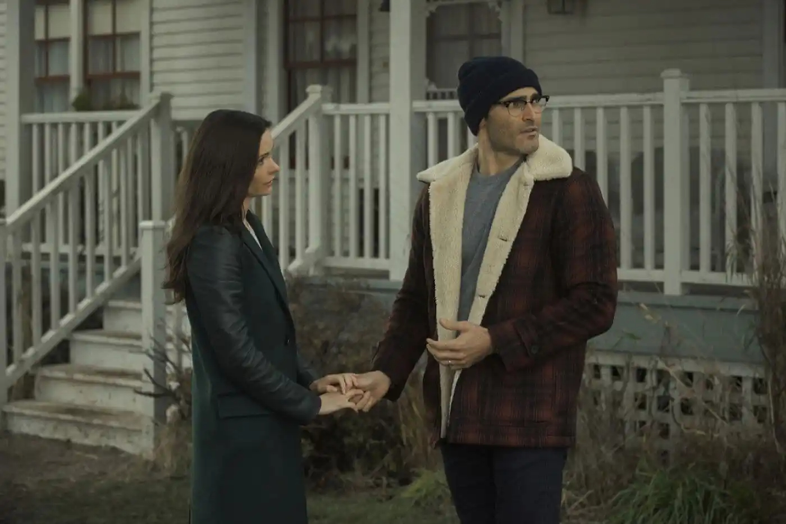

Disponibilidade

Superman e Lois já conta com quatro temporadas e está sendo transmitido pelo canal de TV Warner Channel e no serviço de Streaming HBO Max. Os novos episódios da série saem aos sábados.
Superman & Lois acompanha Clark Kent (Tyler Hoechlin) e a jornalista Lois Lane (Elizabeth Tulloch) retornando a Smallville para criar seus filhos adolescentes, Jonathan e Jordan, longe de Metropolis. A série foca no equilíbrio entre o trabalho de super-herói e os desafios de ser pai, enquanto os gêmeos lidam com a possibilidade de herdar poderes kryptonianos
Superman e Lois já conta com quatro temporadas e está sendo transmitido pelo canal de TV Warner Channel e no serviço de Streaming HBO Max. Os novos episódios da série saem aos sábados.
Enquanto se adaptam à nova vida, Lois e Clark tomam uma importante decisão em relação a um de seus filhos. Enquanto isso, as tensões começam a aumentar entre Lois e Morgan Edge.
Lois e Clark enfrentam problemas no relacionamento. Chrissy se ajusta para administrar o Smallville Gazette com Lois, e Kyle se preocupa com o envolvimento de Lana com um novo candidato a prefeito.
Clark e Lois estão aproveitando a vida simples em uma cidade pequena. No entanto, o trabalho secreto de Lois revela um inimigo mortal que promete mudar a família Kent para sempre.
O Superman (Tyler Hoechlin) trava uma batalha brutal contra o monstro de Luthor; Lois (Elizabeth Tulloch) e os meninos correm contra o tempo para salvar o General Lane (Dylan Walsh).


